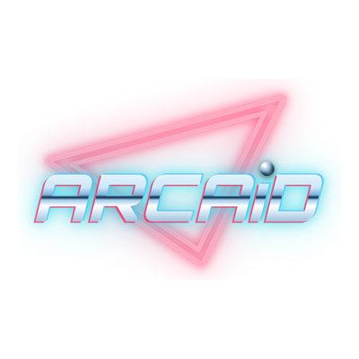

Your name and picture, and how Arcaid looks to you.
Auto follows each room's theme and your device setting on global pages.
Your display name appears on every leaderboard, announcement and notification across Arcaid.
The logins and the machines that are tied to this account.
Beastie Boys
Original 2025 · your best three
This cannot be undone.
Removes your profile, your linked logins and your paired devices. Scores you posted stay on their boards under a retired name.